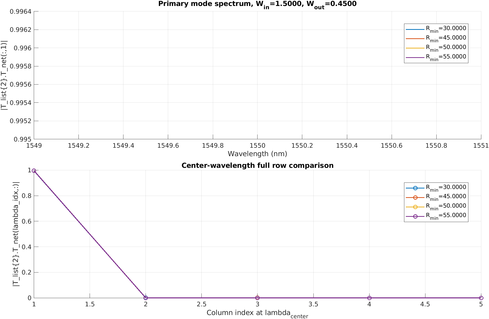
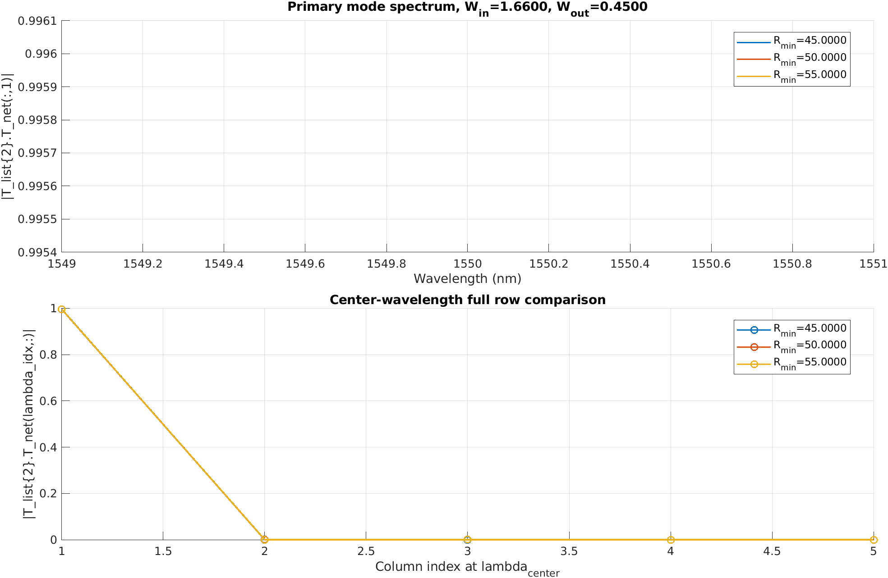
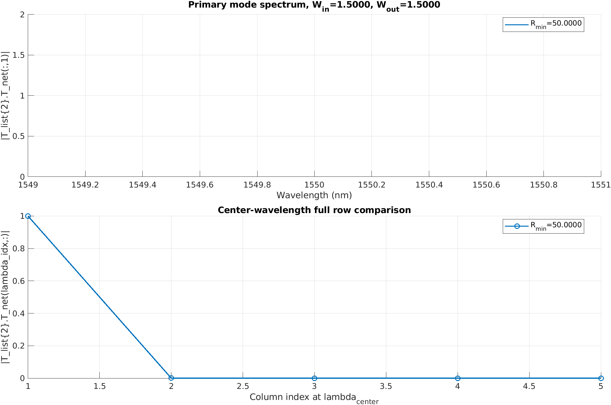

Generated on 2026-04-10 03:29:39. This report compares available cases for widths 0.45, 1.5, and 1.66. It includes complete T_list{2} spectra and full center-wavelength rows |T_list{2}.T_net(lambda_idx,:)| for all available R_min.
Raw consolidated data: pairwise_width_full_tlist.mat
| W_in | W_out | Available R_min |
|---|---|---|
| 0.4500 | 1.5000 | No data |
| 1.5000 | 0.4500 | 30, 45, 50, 55 |
| 0.4500 | 1.6600 | No data |
| 1.6600 | 0.4500 | 45, 50, 55 |
| 1.5000 | 1.6600 | No data |
| 1.6600 | 1.5000 | No data |
| 1.5000 | 1.5000 | 50 |
| 1.6600 | 1.6600 | 50 |
| 0.4500 | 0.4500 | 30 |
| R_min | lambda_center_nm | |T_list{2}.T_net(lambda_idx,1)| | |T_list{2}.T_net(lambda_idx,:)| | basic.mat |
|---|---|---|---|---|
| 30.0000 | 1550.000000 | 0.9996689352 | [ 0.9996689352 0.0000023684 0.0000113287 0.0000000031 0.0000001103 ] | /data/wcli/FDTD_sim/eulersbend_opt_20260409data/dat_eulersbend_opt_20260409/eulersbend_opt_etch_angle_83_h_wg_0.22_W_in_0.45_W_out_0.45_R_min_30_total_angle_deg_30_straight_length_5_N_point_501/basic.mat |
Center row for T_list{1}: [ 0.0000053793 0.0000035996 0.0000044147 0.0000000033 0.0000000120 ]
Center row for T_list{2}: [ 0.9996689352 0.0000023684 0.0000113287 0.0000000031 0.0000001103 ]
0.9996689352 0.0000023684 0.0000113287 0.0000000031 0.0000001103

| R_min | lambda_center_nm | |T_list{2}.T_net(lambda_idx,1)| | |T_list{2}.T_net(lambda_idx,:)| | basic.mat |
|---|---|---|---|---|
| 30.0000 | 1550.000000 | 0.9950872111 | [ 0.9950872111 0.0001488201 0.0009063634 0.0000000852 0.0000000266 ] | /data/wcli/FDTD_sim/eulersbend_opt_20260409data/dat_eulersbend_opt_20260409/eulersbend_opt_etch_angle_83_h_wg_0.22_W_in_1.5_W_out_0.45_R_min_30_total_angle_deg_30_straight_length_5_N_point_501/basic.mat |
| 45.0000 | 1550.000000 | 0.9959066360 | [ 0.9959066360 0.0000327879 0.0002328245 0.0000000704 0.0000002959 ] | /data/wcli/FDTD_sim/eulersbend_opt_20260409data/dat_eulersbend_opt_20260409/eulersbend_opt_etch_angle_83_h_wg_0.22_W_in_1.5_W_out_0.45_R_min_45_total_angle_deg_30_straight_length_5_N_point_501/basic.mat |
| 50.0000 | 1550.000000 | 0.9962133097 | [ 0.9962133097 0.0000496497 0.0000297765 0.0000000285 0.0000000069 ] | /data/wcli/FDTD_sim/eulersbend_opt_20260409data/dat_eulersbend_opt_20260409/eulersbend_opt_etch_angle_83_h_wg_0.22_W_in_1.5_W_out_0.45_R_min_50_total_angle_deg_30_straight_length_5_N_point_501/basic.mat |
| 55.0000 | 1550.000000 | 0.9961638134 | [ 0.9961638134 0.0000350444 0.0000368975 0.0000000286 0.0000000352 ] | /data/wcli/FDTD_sim/eulersbend_opt_20260409data/dat_eulersbend_opt_20260409/eulersbend_opt_etch_angle_83_h_wg_0.22_W_in_1.5_W_out_0.45_R_min_55_total_angle_deg_30_straight_length_5_N_point_501/basic.mat |
Center row for T_list{1}: [ 0.0000044874 0.0000117319 0.0000007161 0.0000004947 0.0000072615 ]
Center row for T_list{2}: [ 0.9950872111 0.0001488201 0.0009063634 0.0000000852 0.0000000266 ]
0.9950872111 0.0001488201 0.0009063634 0.0000000852 0.0000000266
Center row for T_list{1}: [ 0.0000099104 0.0000136767 0.0000000286 0.0000001541 0.0000076088 ]
Center row for T_list{2}: [ 0.9959066360 0.0000327879 0.0002328245 0.0000000704 0.0000002959 ]
0.9959066360 0.0000327879 0.0002328245 0.0000000704 0.0000002959
Center row for T_list{1}: [ 0.0000092147 0.0000053685 0.0000034938 0.0000024717 0.0000026003 ]
Center row for T_list{2}: [ 0.9962133097 0.0000496497 0.0000297765 0.0000000285 0.0000000069 ]
0.9962133097 0.0000496497 0.0000297765 0.0000000285 0.0000000069
Center row for T_list{1}: [ 0.0000114355 0.0000073768 0.0000018949 0.0000016078 0.0000043087 ]
Center row for T_list{2}: [ 0.9961638134 0.0000350444 0.0000368975 0.0000000286 0.0000000352 ]
0.9961638134 0.0000350444 0.0000368975 0.0000000286 0.0000000352

| R_min | lambda_center_nm | |T_list{2}.T_net(lambda_idx,1)| | |T_list{2}.T_net(lambda_idx,:)| | basic.mat |
|---|---|---|---|---|
| 45.0000 | 1550.000000 | 0.9960053736 | [ 0.9960053736 0.0000073113 0.0000473648 0.0000001055 0.0000008272 ] | /data/wcli/FDTD_sim/eulersbend_opt_20260409data/dat_eulersbend_opt_20260409/eulersbend_opt_etch_angle_83_h_wg_0.22_W_in_1.66_W_out_0.45_R_min_45_total_angle_deg_30_straight_length_5_N_point_501/basic.mat |
| 50.0000 | 1550.000000 | 0.9954862376 | [ 0.9954862376 0.0001884220 0.0002855330 0.0000000094 0.0000003517 ] | /data/wcli/FDTD_sim/eulersbend_opt_20260409data/dat_eulersbend_opt_20260409/eulersbend_opt_etch_angle_83_h_wg_0.22_W_in_1.66_W_out_0.45_R_min_50_total_angle_deg_30_straight_length_5_N_point_501/basic.mat |
| 55.0000 | 1550.000000 | 0.9956775056 | [ 0.9956775056 0.0001224389 0.0002941780 0.0000000008 0.0000003332 ] | /data/wcli/FDTD_sim/eulersbend_opt_20260409data/dat_eulersbend_opt_20260409/eulersbend_opt_etch_angle_83_h_wg_0.22_W_in_1.66_W_out_0.45_R_min_55_total_angle_deg_30_straight_length_5_N_point_501/basic.mat |
Center row for T_list{1}: [ 0.0000129325 0.0000271501 0.0000007101 0.0000002775 0.0000073387 ]
Center row for T_list{2}: [ 0.9960053736 0.0000073113 0.0000473648 0.0000001055 0.0000008272 ]
0.9960053736 0.0000073113 0.0000473648 0.0000001055 0.0000008272
Center row for T_list{1}: [ 0.0000047397 0.0000226377 0.0000001893 0.0000002612 0.0000054418 ]
Center row for T_list{2}: [ 0.9954862376 0.0001884220 0.0002855330 0.0000000094 0.0000003517 ]
0.9954862376 0.0001884220 0.0002855330 0.0000000094 0.0000003517
Center row for T_list{1}: [ 0.0000080233 0.0000451868 0.0000004729 0.0000022962 0.0000110395 ]
Center row for T_list{2}: [ 0.9956775056 0.0001224389 0.0002941780 0.0000000008 0.0000003332 ]
0.9956775056 0.0001224389 0.0002941780 0.0000000008 0.0000003332

| R_min | lambda_center_nm | |T_list{2}.T_net(lambda_idx,1)| | |T_list{2}.T_net(lambda_idx,:)| | basic.mat |
|---|---|---|---|---|
| 50.0000 | 1550.000000 | 0.9997915351 | [ 0.9997915351 0.0001785139 0.0000000085 0.0000034569 0.0000005697 ] | /data/wcli/FDTD_sim/eulersbend_opt_20260409data/dat_eulersbend_opt_20260410/eulersbend_opt_etch_angle_83_h_wg_0.22_W_in_1.5_W_out_1.5_R_min_50_total_angle_deg_30_straight_length_5_N_point_501/basic.mat |
Center row for T_list{1}: [ 0.0000005368 0.0000000224 0.0000012954 0.0000001515 0.0000000344 ]
Center row for T_list{2}: [ 0.9997915351 0.0001785139 0.0000000085 0.0000034569 0.0000005697 ]
0.9997915351 0.0001785139 0.0000000085 0.0000034569 0.0000005697
| R_min | lambda_center_nm | |T_list{2}.T_net(lambda_idx,1)| | |T_list{2}.T_net(lambda_idx,:)| | basic.mat |
|---|---|---|---|---|
| 50.0000 | 1550.000000 | 0.9999459597 | [ 0.9999459597 0.0000220633 0.0000002191 0.0000011801 0.0000000484 ] | /data/wcli/FDTD_sim/eulersbend_opt_20260409data/dat_eulersbend_opt_20260410/eulersbend_opt_etch_angle_83_h_wg_0.22_W_in_1.66_W_out_1.66_R_min_50_total_angle_deg_30_straight_length_5_N_point_501/basic.mat |
Center row for T_list{1}: [ 0.0000002321 0.0000000153 0.0000002642 0.0000002006 0.0000000031 ]
Center row for T_list{2}: [ 0.9999459597 0.0000220633 0.0000002191 0.0000011801 0.0000000484 ]
0.9999459597 0.0000220633 0.0000002191 0.0000011801 0.0000000484